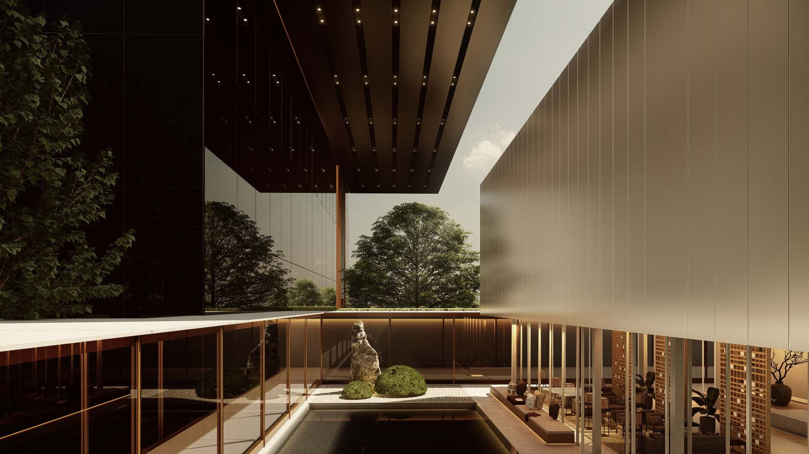
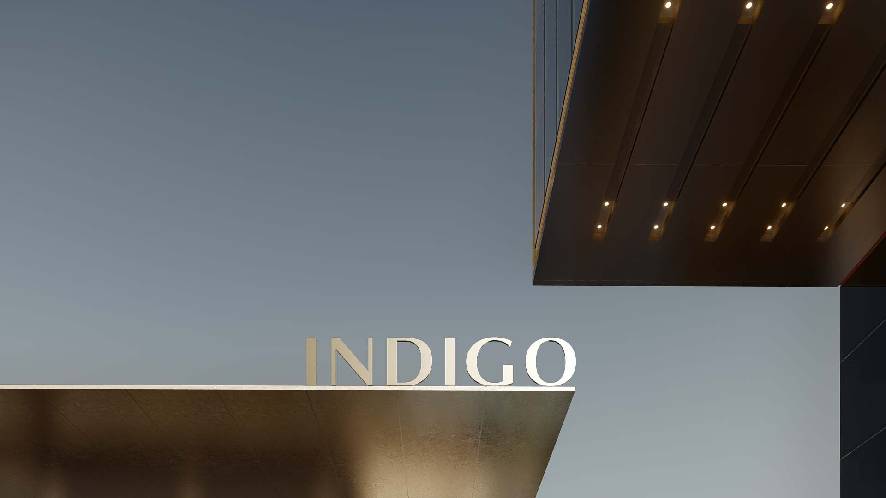
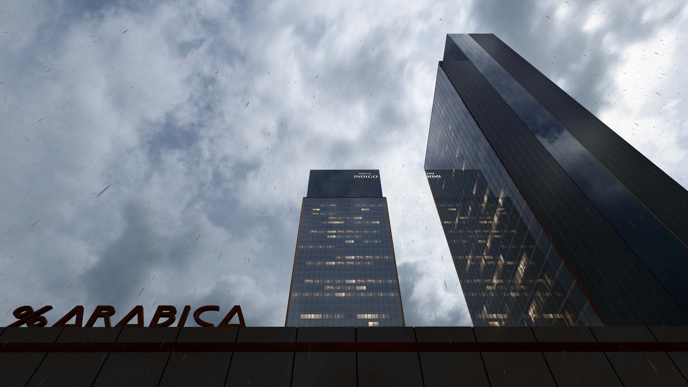
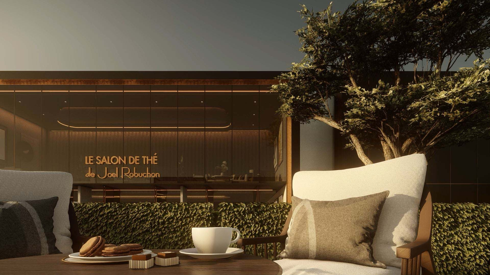
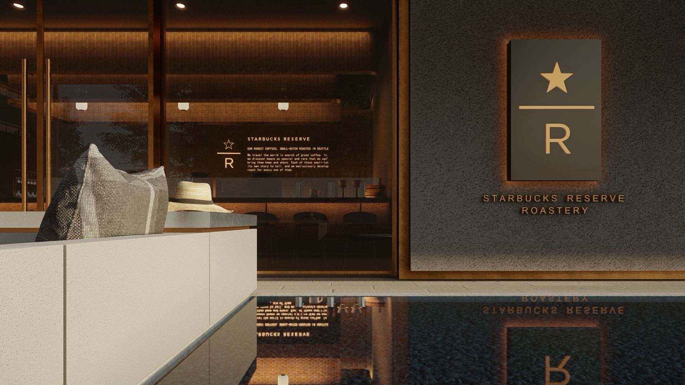
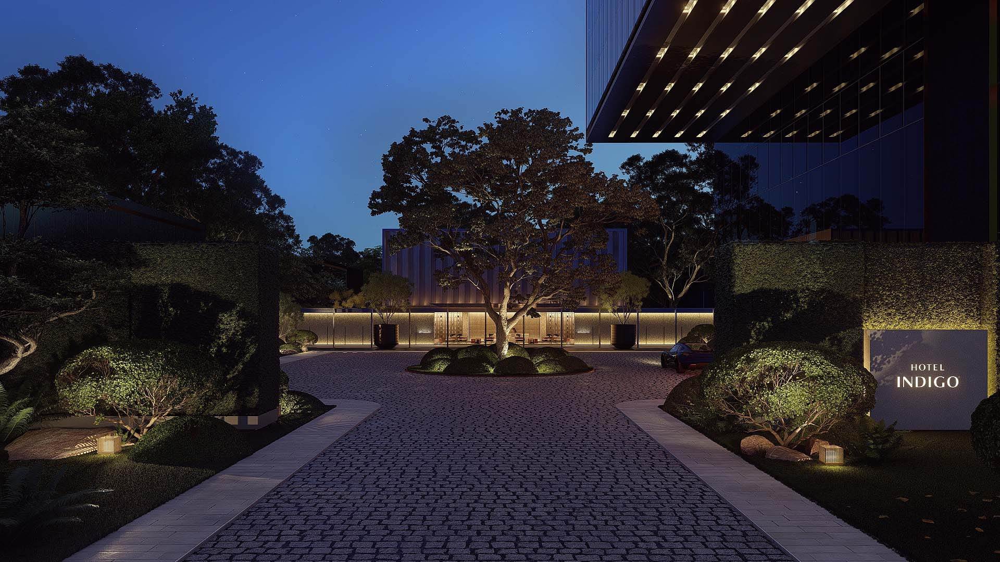
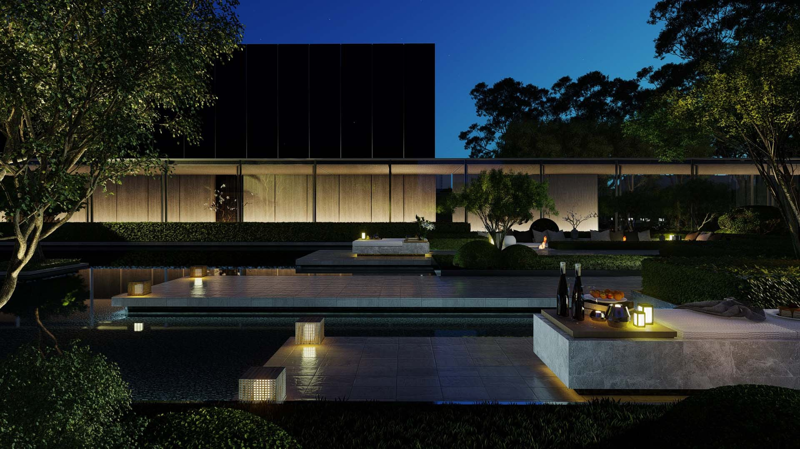

Shijiazhuang, Hebei
Qiangda Indigo & Mixed Use
H2 project archive · 2022
InterContinental Hotels Group PLC (IHG)
All work
The aim is to blend INDIGO’s artistic atmosphere to create a three-dimensional cultural living place in Shijiazhuang.
Combined the basic functions and special premium modules to create a three-dimensional living place in Shijiazhuang.The curatorial business build the vitality gravity field which can be continuously drained to generate income.Design a number of powerful event engines to create Shijiazhuang’s unique Super Exhibition Center.Super Office with high-style office supporting and multi-functional space assistance can meet all the needs of the work. Variety parking camp can enhance the arrival experience, improve multi-income and reserved space for business expansion. The architectural form adopts the vertical form of twin towers, combined with the modern glass curtain wall to create a unique local “Shijiazhuang memory”. Unique stay experience combined with INDIGO art life gene to experience a fresh and fresh local customs and cultural life.












- Location
- Shijiazhuang, Hebei
- Year in source archive
- 2022
- Hotel group in archive
- InterContinental Hotels Group PLC (IHG)
The year is the year stated in the original archive, not a verified completion date. The source may include design-stage imagery. Current naming, status, precise scope and image credits require confirmation before official publication.